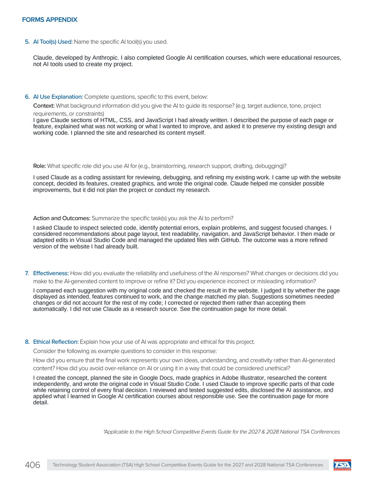
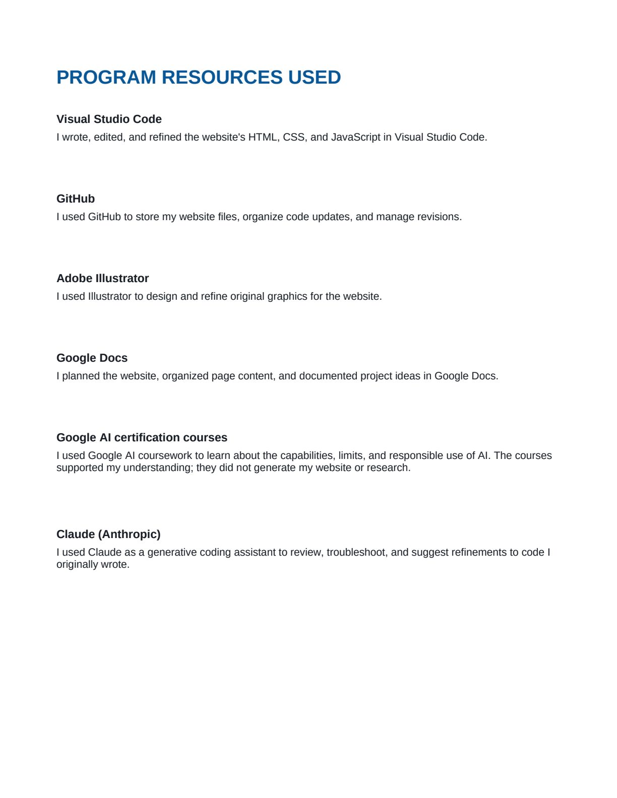

References
Every source, tool and form used to build Agent Investigator.
Student Copyright Checklist

Resources and AI Reflection



Sources of information
- Buolamwini, J., & Gebru, T. (2018). Gender Shades: Intersectional accuracy disparities in commercial gender classification. Proceedings of Machine Learning Research, 81. proceedings.mlr.press
- Federal Communications Commission. (2024, February 8). FCC makes AI-generated voices in robocalls illegal. Reported by NPR. www.npr.org
- Federal Trade Commission. Children's Online Privacy Protection Rule (COPPA). www.ftc.gov
- Mata v. Avianca, Inc., No. 22-cv-1461 (S.D.N.Y. June 22, 2023), opinion and order on sanctions. law.justia.com
- Gurman, M. (2023, May 2). Samsung bans staff's AI use after spotting ChatGPT data leak. Bloomberg. www.bloomberg.com
- National Aeronautics and Space Administration. Great Wall [image article]. www.nasa.gov
- NOAA Florida Keys National Marine Sanctuary. Coral reef biodiversity. floridakeys.noaa.gov
- U.S. Department of Agriculture. The importance of pollinators. www.usda.gov
- National Institute of Standards and Technology. (2023). AI Risk Management Framework (AI RMF 1.0). www.nist.gov
- World Economic Forum. (2025). The Future of Jobs Report 2025. www.weforum.org
- International Energy Agency. (2025). Energy and AI. www.iea.org
- Coalition for Content Provenance and Authenticity (C2PA). Content Credentials. c2pa.org
- IBM. Deep Blue. www.ibm.com
- Meriam Library, California State University, Chico. (2010). Evaluating information: Applying the CRAAP test.
- Cornell University Learning Strategies Center. The Cornell note-taking system. lsc.cornell.edu
- Technology Student Association. (2026). 2026–2027 Webmaster theme and High School Competitive Events Guide. tsaweb.org
- Project team lesson plans: Types of AI, Using AI Responsibly, AI for Content, AI for Data Analysis, How to Prompt AI and AI for App Development (unpublished team documents).
Software, libraries and frameworks
- Hand-coded HTML, CSS and JavaScript. No website builder or content management system was used.
- Three.js (r147), MIT License, for the 3D case files. threejs.org
- Firebase JavaScript SDK 10.12 (Google), for accounts and saved progress. firebase.google.com
- Anton and Inter fonts from Google Fonts, SIL Open Font License. fonts.google.com
- Hosted on GitHub Pages. pages.github.com
Copyright and permissions
No copyrighted text, images, music or sound from other creators are used on this site, so no written permissions are required. All graphics, the case-file logo, agent avatars and 3D city models are original to this project. Fonts and code libraries are used under the open licenses listed above. All case-file stories and characters are fictional.